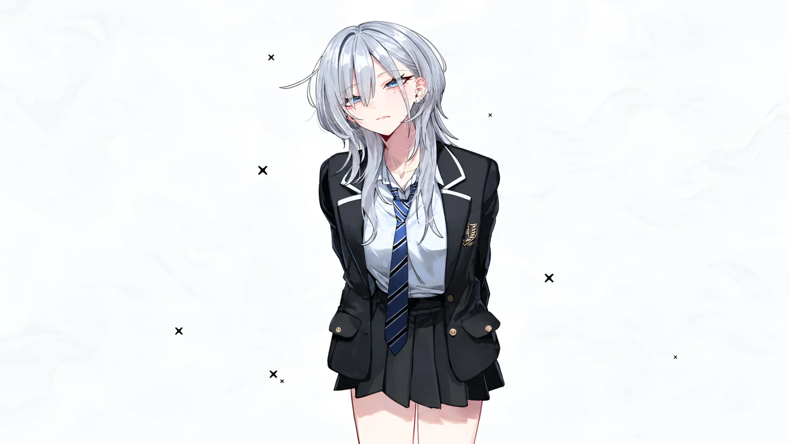

Anlatı
Oynanışın içine işleyen, karakterleri güçlü hikâyeler.
01 / NARRATIVEAderion Studios, karakterleri ve hikâyeleri merkeze alan oyunlar kurmayı hedefleyen bağımsız bir stüdyo. Kendi yolumuzu, merak ettiğimiz dünyaları yaratarak çiziyoruz.

Aderion’da bir dünyanın değerini yalnızca boyutu ya da teknik gösterişi belirlemez. Oyuncunun karakterlerle kurduğu bağ, aldığı kararlar ve hatırladığı anlar belirler.
Visual Novel ile güçlü anlatılar, Voxel ile keşfedilesi alanlar, 2D oyunlarla da oynanışın taşıdığı hikâyeler hayal ediyoruz. Henüz planlama ve üretim yolculuğumuzu şekillendiriyoruz; her adımı düşünerek atmak istiyoruz.
Oynanışın içine işleyen, karakterleri güçlü hikâyeler.
01 / NARRATIVEDetaylarıyla merak uyandıran, kendine has dünyalar.
02 / EXPLORATIONSanat, yazılım ve sesin birbirini tamamladığı ekip çalışması.
03 / COLLABORATIONAşağıdaki başlıklar planlanan çalışma aşamalarımızdır; resmî tarih veya tamamlanmış proje duyurusu değildir.
Stüdyo kimliğini, çalışma biçimini ve yaratıcı ekip yapılanmasını oluşturmak.
Visual Novel, Voxel ve 2D fikirlerinden seçilen konseptleri oynanabilir prototiplere dönüştürmek.
İlk oynanabilir yapıları test etmek; hikâyeyi, hissi ve oynanışı geri bildirimle geliştirmek.
Doğru zamanda oynanış kesitleri, geliştirme notları ve oyun duyurularını paylaşmak.
Sanat, hikâye veya geliştirme tarafında katkı vermek ister misin?